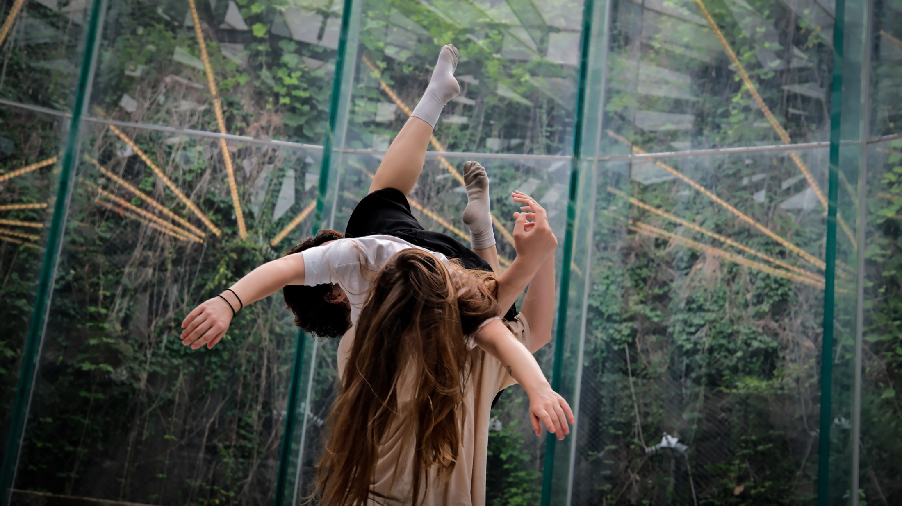
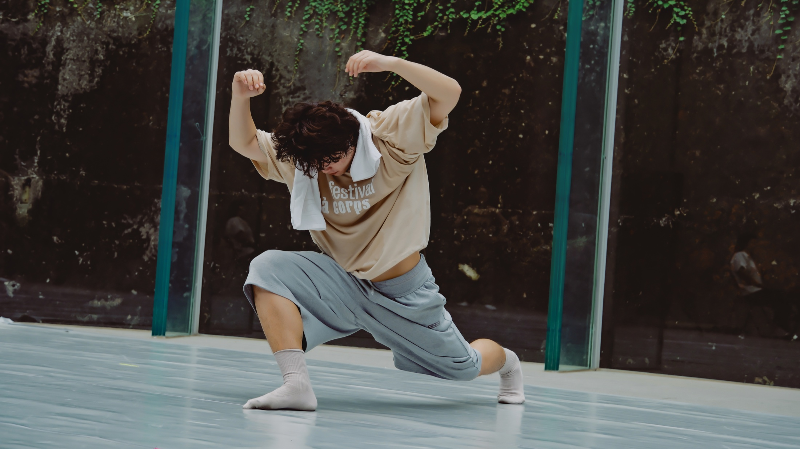
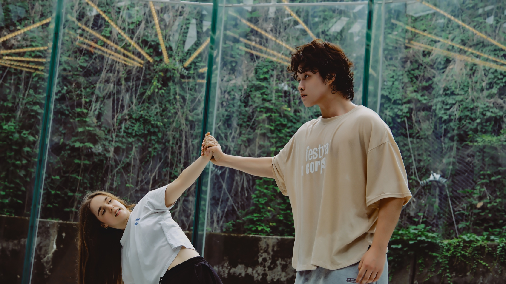
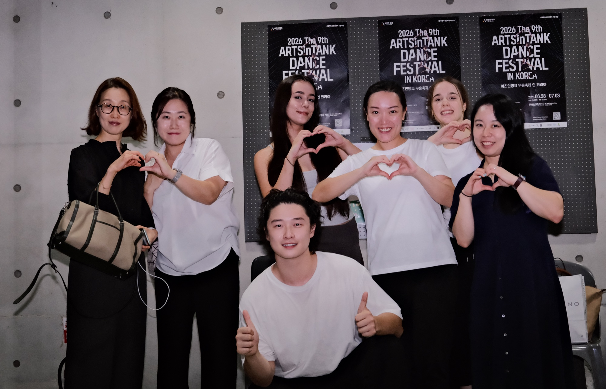
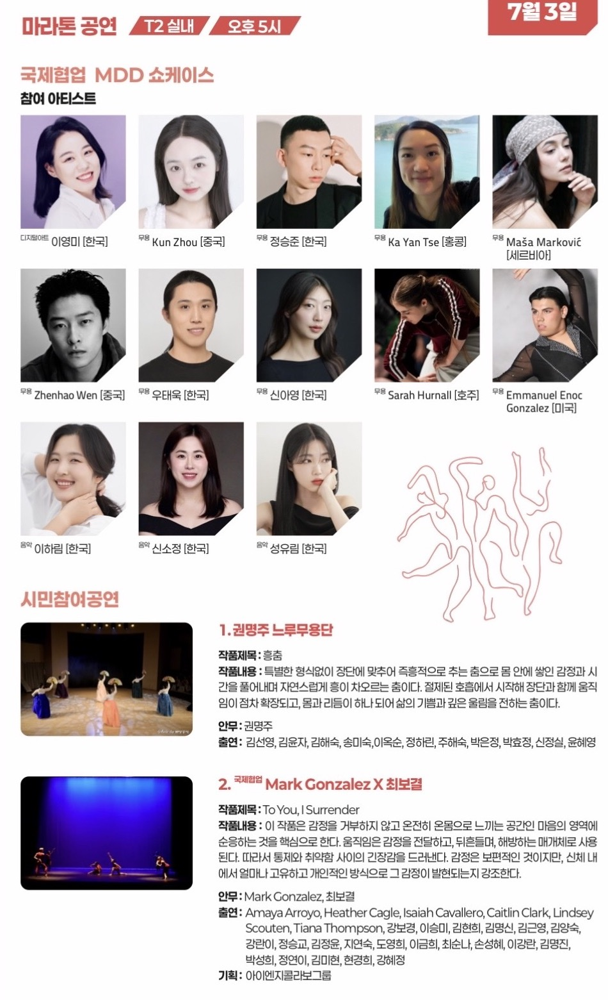

Oil Tank Culture Park · Seoul
ARTSinTANK Dance Festival in Korea
International MDD CollaborationThe ninth ARTSinTANK Dance Festival in Korea ran at Oil Tank Culture Park in Seoul from 28 June to 3 July 2026. Its MDD programme brought musicians, digital artists and dancers from six countries and regions into one residency. I danced in its 3 July showcase at 5:00 p.m. in Tank 2.

Residency
Residency and performance process · Oil Tank Culture Park
The official programme lists me among the MDD participating artists, alongside artists from Korea, China, Hong Kong, Serbia, Australia and the United States; it does not give the collaborative work a separate title.
Showcase
3 July 2026, 5:00 p.m. · Tank 2, Oil Tank Culture Park
The international MDD showcase concluded the festival’s residency process. This video documents the collaborative performance and is embedded here from my YouTube channel.
Performance
International collaboration · July 2026



- Performer
- Zhenhao Wen
- Programme
- International MDD Collaboration Showcase
- Festival
- Ninth ARTSinTANK Dance Festival in Korea
- Performance
- 3 July 2026, 5:00 p.m., Tank 2, Oil Tank Culture Park, Seoul
Photographs provided by Zhenhao Wen; photographer not identified.
Film
A separate organizer programme · 23 September 2026
To Leave a Trace, a separate work, is scheduled in the organizer’s relay dance film programme on 23 September 2026. See the film’s screening record.
Official Record
Government, organizer and public performance documentation


Seoul Metropolitan Government festival listing
The city’s record of the dates, Oil Tank Culture Park and the international MDD collaboration.
Official festival programme, page 19
Names Zhenhao Wen among the MDD participating artists and gives the slot: 3 July, 5:00 p.m., Tank 2.
Public performance listing on Playticket
The public record of the same showcase, naming Zhenhao Wen among the MDD artists.